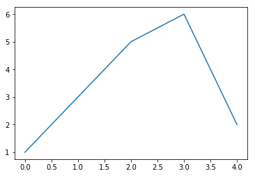

Org mode tutorial
This is a document intended to be a tutorial for org mode. It was created by following the series org mode basics from the blog Pragmatic Emacs.
I will probably modify it further to also test some specific features related to blog posts, as there are some parts of the file that need to be adapted.
Org mode notes
Setting up a simple text-based notebook.
Org mode structure
Text in org is structured by headings, denoted by lines starting with *, so we are currectly on a section.
A subheading
Starts with an extra *.
Lists
-
Bullet lists
- Bullet list can be created with a space and -
-
M-retgives a new bullet - Nested bullets
-
M-retTAB - Now
M-retindents to the previous
-
- Now TAB two times let you reindent again.
- The nice thing is that for long lines of text, emacs wraps them so that they line up with the bullet.
- You can reorder bullets like sections with
M-upM-down - You can change bullet style with
S-leftS-right.
-
Numbered lists
- Numbered lists are also possible
- M-ret gives a new number
-
Checklists
[1/5]-
[ ]We can even have checklists -
[ ]M-S-RET gives a new item with checkbox -
[X]C-c C-c checks unchecks a box -
[ ]You can have subitems-
[ ]Like this -
[ ]Can be checked off individually
-
-
[ ]You can track the number of items by adding[0/0]to the end of a line above a checklist - This updates when you check items off
-
-
Definition lists
Next, some defintions.
- Definition lists
- they are useful sometimes
- item 2
- M-RET gives another item, long lines wrap up in a tidy way when using a definition.
Use simple tables in your notes
Adding simple tables to your notes.
Tables
Hopefully you can see right away that the simple structure provided by org-mode gives a nice way to keep an electronic notebook.
Often it's nice to include tables in our notes. Org handles this by using | to separate columns, and a line of — (C-c -) to add horizontal lines.
Exercise: start typing in this table below.
- When you get to the last "s" in comments, press TAB to go to the next line.
- Go up to the previous line and use C-c - to add the row of dashes
- Next, enter a few lines of data, using TAB to go through the cells - you should notice the columns changing width as needed.
Note: You can do the first two steps in one by C-c RET after the last "s" in comments.
This is how tables are rendered by default in this theme.
| ID | x | y | comments |
|---|---|---|---|
| 1 | 24 | 6 | first |
| 2 | 64 | 24 | second |
| 3 | 8 | 15 | third |
| 4 | 23 | 63 | fourth |
| 5 | 10232 | 101 | fifth |
Now, if you change the html properties, you can obtain something like the following:
| ID | x | y | comments |
|---|---|---|---|
| 1 | 24 | 6 | first |
| 2 | 64 | 24 | second |
| 3 | 8 | 15 | third |
| 4 | 23 | 63 | fourth |
| 5 | 10232 | 101 | fifth |
- Change order of rows and columns:
M-arrow - Insert or delete rows and columns:
M-S-arrow
Creating and exporting tables
You can create an empty table using C-c | to run the command
org-table-create-or-convert-from-region which will prompt for table
dimensions if no region is selected.
The same command can easily convert some text to table. Select the text and use
C-c | to run the command org-table-create-or-convert-from-region again to
convert text to table.
| ID | x | y | Mean |
|---|---|---|---|
| A | 9 | 4 | 6.5 |
| B | 5 | 4 | 4.5 |
| C | 18 | 8 | 13 |
| D | 36 | 16 | 26 |
| Sum | 68 | 32 | 50 |
You can also save tables to their own files by putting the cursor in the table
and using M-x org-table-export. You'll be asked for a file name and a
format. For the format, type orgtbl-to and press TAB to see available options.
Formulae
You can use formulae to do arithmetic on tables and use them like a
spreadsheet.
One useful command is C-c + which runs org-table-sum to sum the numbers in
the current column.
Add links and images to your notes
We'll look at adding links and images. Links can be files, URLs or locations in the current org document. If the link is to an image, then emacs can display it inline int the org document. This is handy for enhancing your notes and will also be useful when we come to look at exporting to different formats.
Links and images
Org mode supports links to files, URLs and to other points in the org file. In this example, let's use an image from my website. First copy it to the current directory. Run this command:
curl http://www.star.bris.ac.uk/bjm/superman_cluster.gif -o superman_cluster.gif
To add a link to a file in the same directory use C-u C-c C-l and type the
name of the file. Use tab-completion to select the image we just copied and you
will then be asked for a description - you can press ENTER to leave this
blank.
We can add a caption and a name to our image like this

Figure 1: Superman and a galaxy cluster
With the caption, we can later refer to the image like Figure 1
Now, I will test a gif I have obtained from my screen using Peek and key-mon
Figure 2: A screencast of my terminal
This is Figure 2
Normally, if you do this in your org file, it appears as a clickable link.
There is an issue in Nikola that makes you add a link with an additional ../
at the beginning, so it does not work here.
Since the file we have linked to is an image, we can tell emacs to show the
image inline in the document using C-c C-x C-v and use the same command to
turn it off.
You can also click the link with the mouse, or use C-c C-o to follow it,
which might open your web browser, an image viewer or an emacs buffer.
The structure of a link in org mode looks like this
[[link address][description]]
The example block allows to show the structure of an org link. The link address is the URL or file name and the description is the text that is displayed, so we can replace our superman link with something tidier like
[[file:superman_cluster.gif][this]]
Links to web pages are easy - just put the http address in as the link
address. Use C-c C-l as a quick way to add such a link (Remember we used C-u
C-c C-l for adding a link to a file).
Links to other parts of the org file are added easily like
[[Links and images][this link]]
Because the address part of the link matches a headline in this document, then org-mode points the link to that part of he file. Clickint it will move the cursor there.
Formating text
We will look at formatting the text in your notes.
Simple formatting
You can apply simple formatting in your text by enclosing words in special characters. These include
- italicised text
- bold text
- underlines
-
literal text -
code(generally appears the same as literal text)
Formatted blocks of text
For longer pieces of text you can enclose it in blocks that mark specific sort of text. I commonly use these:
This is an example block into which you can type text that you don't want org to mess with like [[link]]. This will typically be rendered in a monospace font when exported.
This block encloses text that you want to appear as a quotation
This text will be centered when exported
You can use shortcuts to introduce blocks. Go to the start of a new line and type <e and press TAB and it will expand to an example work. The same happens with <q and <c
\LaTeX
Org mode does a good job when understanding snippets of LaTeX (powerful typesetting language used in scientific and other technical documents). For example, it will correctly export single superscripts like x2 or subscripts x0 or symbols like α, β, γ.
Org also understand more complex \LaTeX{} like this:
\begin{eqnarray} x^2 + \left(\frac{y}{z}\right)^4 = 0 \end{eqnarray}Math can be used inside text, like \(\lim_{x\to\infty} f(x)\) or \(e^{i\pi} + 1 = 0\)
Maxwell's equations:
\begin{equation} \nabla \cdot \vec{E} = \frac{\rho}{\epsilon_0}\\ \end{equation} \begin{eqnarray} \nabla \cdot \vec{B} &=& 0 \nonumber \\ \nabla \times \vec{E} &=& - \frac{\partial B}{\partial t} \nonumber \\ \nabla \times \vec{B} &=& \mu_{0}\vec{J} + \mu_{0}\epsilon_{0}\frac{\partial E}{\partial t} \end{eqnarray}but for longer bits of LaTeX it is better to use a LaTeX block. You start one with <l and TAB
Source code blocks
It is also handy to include source code in you notes - on a new line type <s and TAB to create a source block. You can tell org what type of code is contained - in this case we'll put some simple shell code , so we'll put "sh" at the top of the block.
echo "Hello $USER! Today is `date` "
exit
Hello carlosperez! Today is sáb oct 14 13:26:10 COT 2017
You can get org to syntax highlight the text in the block by adding the following to your emacs config file:
;;syntax highlight code blocks
(setq org-src-fontify-natively t)
What is more, when the cursor is inside a SRC block, you can use C-c ' to create a new temporary buffer in the major mode of the programming language you have specified. Type some code in, and then type C-c ' again to come back to this buffer.
Some \LaTeX{} code
Some \LaTeX{} code
# List numbers from 0 to 5
for i in range(6):
print(i)
0 1 2 3 4 5
It is possible to also embed some html directly into org mode, like I did to embed this youtube video
#+HTML: <iframe width="560" height="315" src="https://www.youtube.com/embed/U7vFCWEERNA" frameborder="0" allowfullscreen></iframe>
A progress bar!
Some code using the ob-ipython library
%matplotlib inline
import matplotlib.pyplot as plt
plt.plot([1,5,3,5,3,7])

Executing source code blocks
Org mode can execute your source code blocks and add the output to your file. This part of org mode is called org-babel.
For example, take the simple code block we had above. Put the cursor inside the block and hit C-c C-c to execute it. You will be asked to confirm and then you should see the output appear.
Navigation
TAB: Headings can be expanded or collapsed. S-TAB: cycles all headings C-c C-n | C-c C-p: Move between headings
M-up | M-down: Reorder headings M-left M-right: Change level of headings M-S-left M-S-right: Change level of headings and its subheadings